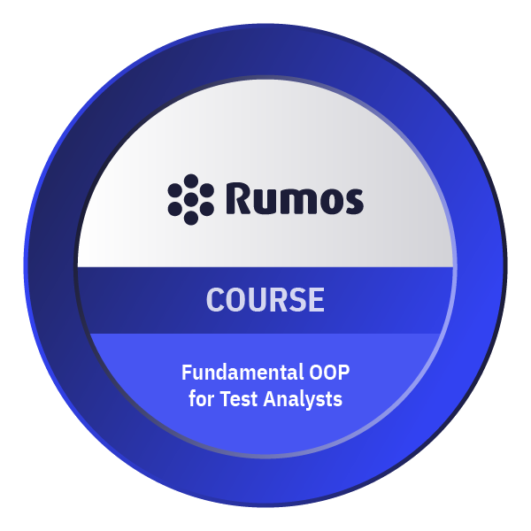
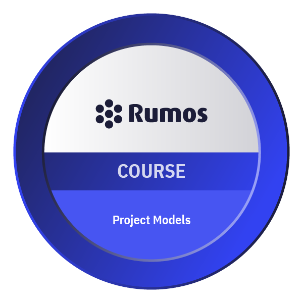

◀
▶
CertiProf · QA
Tester de Qualidade
QA Academy
Tipos e Testes Técnicos
QA Academy

Fundamentos de OOP
QA Academy
Competências de Tester
Formação Contínua

Aprendizagem Contínua
Scrum · Agile

Scrum Foundation
Remote Work
Trabalho Remoto
Projetos

Modelos de Projeto
QA Testing
Testes de Software
QA Practitioner
Practitioner QA Tester
QA Tools
Ferramentas de Teste
Cisco · Cybersecurity

Introdução à Cibersegurança
Cisco · IoT

Introdução à IoT
Cisco · Hardware

Fundamentos de Hardware
Cisco · English IT
Inglês para IT 1
Cisco · English IT

Inglês para IT 2
Cisco · English IT
Descrever e Comparar
Cisco · English IT
Conselho e Tempo
Cisco · English IT
Pessoas e Quantidades
Cisco · English IT
Necessidades e Responsabilidades
Cisco · Redes

Fundamentos de Redes
Curso em Vídeo
Word
Curso em Vídeo
Excel
GitHub
Git e GitHub
Curso em Vídeo
Hardware
Design